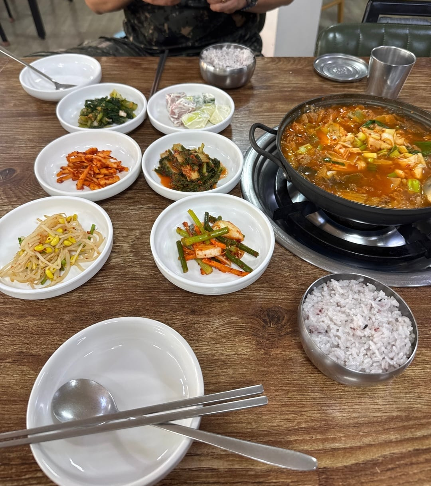

안녕하세요, 해당 예비군중대 중대장님 밑에 있던 병사입니다.
몇가지 예비군대원님이 오해하고 계신 상황이 있는 것 같아 바로잡고자 합니다.
1. 작계훈련은 전시때 원활한 급식이 가능하도록 협약된 식당을 정해두고 합의각서를 작성, 작전상황을 가정해 급식을 진행해보는 과정을 포함합니다. 그렇기에 몸 상태가 나쁘다는 특이사항을 제외하고는 전원 급식을 진행하고 있습니다. 중대장님도 급식이 필수적으로 참여되어야 하는 이유를 훈련 전 사전에 고지하고, 미급식 여부에 대한 조사를 진행합니다. 장염이나 아토피와 같이 특수한 경우엔 열외해주십니다. 간혹 에어팟을 끼거나 하여 미급식 조사때 얘기하지 못하고 뒤늦게 안먹겠다고 하는 대원분들이 계신데, 그럼에도 저희 중대장님은 반영해 주셨습니다.
2. 작계 중 집을 갔다온다고 하는 것은 있어보지 못했던 일이라 실랑이가 벌어진 것 같습니다. 원칙적으로는 훈련 입소 후 지정 훈련지역 이탈이 불가능합니다. 작성자분이 집을 간 적이 있다면 이전 중대장님들이 유도리로 보내주신 겁니다. 당연히 보내드릴 수 있는 권리가 아닙니다. 만약 이 과정에서 집에 가지 않고 급식을 먹었던 다른 대원이 문제를 제기하면, 훈련 과정에서 작성자님에게만 특혜를 주었던 것으로 오히려 중대장님이 처벌을 받습니다. 예비군 감사도 그렇게 진행을 하고요. 모두가 집에서 밥을 먹고 다시 오고싶어하지 않겠습니까? 감사때 훈련 무기지급명부와 특이사항을 전부 확인합니다. 이번 일로 인해 유도리로 집에 가던 타 대원분들도 피해를 입겠네요.
3. 만약 작성자님이 아이를 부득이하게 보셔야 한다면 훈련참석이 아닌, 훈련을 연기하셨어야 한다고 봅니다. 아내분께서 1개월된 아이가 있다고 하셨는데, 예비군 교육훈련 훈령에 의거하여 배우자의 출산(예정)일이 소집기간 30일 전ㆍ후와 중복된 경우 훈련 연기가 가능합니다. 꼭 그게 아니더라도 주요업무 수행으로 연기가 가능하기도 하고, 작계훈련은 동원훈련과 다르게 연기가 매우 쉽습니다.
4. 저도 해당 작계식당 가서 실제로 식사를 해봤고, 그땐 공깃밥이 꽉차게 잘 나왔습니다. 왜 이렇게 사진과같이 부실하게 나왔는지는 이해할 수 없네요. 예비군중대 앞 ㅈㅅㅅㅊ이라는 식당입니다. “직접담근 김치찌개” 가격은 9,000원으로, 예비군 식대에 맞는 가격입니다. 7,000원은 네이버지도의 업데이트되지 않은, 몇 년 전 가격을 보신 듯 합니다. 사진에서 보여진 공깃밥은 제가 갔을때랑 비교해서 너무 적게 나왔고, 충분히 컴플레인 거실만한 사항이라고 봅니다. 제가 갔을 때의 식당 사진을 첨부합니다.

중식비는 동대가 아닌 여단에서 식당으로 직접 입금하고, 사단에서 입소명부와 금액을 확인하는 이중 절차를 거치고 있습니다. 그러기에 영수증을 하나하나 첨부합니다. 아껴서 뒷돈을 받는다거나 할 수 있는 구조가 아닙니다.
5. 중대장님 특성상 밥이 적게나왔다고 현장에서 말씀해주셨으면, 누구보다 먼저 내려가셔서 화내셨을 분입니다. 민원으로 사후처리된게 안타깝네요...
6. 중대장님이 평소 반존대를 섞어서 하십니다. 그거에 대해선 딱히 말씀드릴게 없네요,, 기분 나빴다면 그럴만 하다고 봅니다. 중대장님도 작성자님이 누군지 인지하고 계십니다. 모든 글 확인하셨습니다. 씨발럼 등의 표현 보시면서 마음 아파하셨는데, 저도 안타깝더라고요.
7. 글 말미의 하사는 현역이 아닌 예비군 소대장입니다. 상근이랑 소대장, 그리고 중대장님은 서로 친합니다. 윽박지르시는 것도 친근함의 표현이고, 으레 하시는 장난입니다. 오해하셨을 수 있습니다. 중대장님과 부대끼며 지내는 저희가 더 잘 알지 않겠습니까?
8. 중대장님 정말 좋으신 분입니다. 평소 병사들에게도 스스럼없이 대해주시고, 유도리도 많으십니다. 너무 악독한 분으로 묘사하셔서 제가 아는 중대장님이 맞나 싶었네요.
학생예비군 보류신고 늦은 사람도 원칙적으로는 고발해야하나, 전과 만들어서 뭐하냐며 중대장님이 피해 떠안으셨습니다. 훈련 미참석자 및 고발대상자들도 전부 전화돌려서 최대한 고발당하지 않는 쪽으로 안내해주십니다. 제가 근무할때도 고발해본 예비군대원님은 단 1명이고, 이마저도 20통 넘게 전화를 걸었음에도 받지 않았던 대원님입니다.
제보된 언론사에도 사실확인 및 정정을 완료하였고, 금일 본 사건과 관련하여 공문이 하달되었습니다. 항상 대한민국을 위해 힘써주시는 예비군 대원님들께 감사드립니다.
원글 볼 때 말투부터 ㅂㅅ같았음.